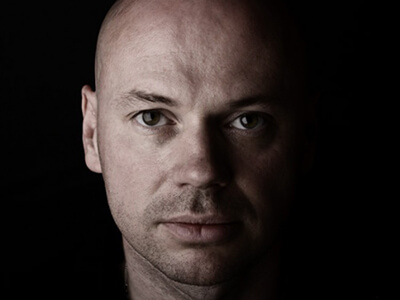

Throughout the years, I have encountered many musicians that have impacted me both musically and spiritually. My musical influences have changed during my life depending on what I was feeling, what I was experiencing, where I was living, etc. Because the list is so long, I have named just a few of the most influential artists of my life thus far.
Influences
Artist

Nick Warren
Nick Warren is an English house DJ and producer. He is well known for his eight albums released in the Global Underground series and as a member of the duo Way Out West. He is head of A&R for the progressive house and breaks record label Hope Recordings.

Sasha
Sasha, an incredible Dj, is a Welsh DJ, record producer and Grammy Award nominee. He was voted World No. 1 DJ in 2000 in a poll conducted by DJ Magazine. He is a four-time International Dance Music Awards winner and four-time DJ Awards winner.
Hernan Cattaneo
More than a performer, he has been a leader, taking the Argentinian house movement from a local collective to international prominence, and along with it exposing the world to some of the most now critically acclaimed sounds in progressive, house, and techno.

Steve Lawler
Steve Lawler needs no introduction, but he certainly warrants one. You would be hard pushed to find a more in-form, in-demand, exceptionally talented artist, regarded as highly by his industry peers as he is by his huge global base of musically educated fans.

Dave Seaman
Dave Seaman (born 29 April 1968) is a British dance music DJ and record producer. There aren’t many artists who’ve soundtracked the birth of dance music and are still leading its development more than two decades later. He has founded Audio Therapy record label.
16 Bit Lolitas
They claimed worldwide recognition with tracks like ‘Murder Weapon’, ‘Nobody Seems To Care’, ‘Sedna’ and remixes for the likes of Sander Kleinenberg &Armin van Buuren. Their productions are known for their patiently crafted &sophisticated sound.
Darin Epsilon
Internationally acclaimed DJ, producer, radio host, and label owner Darin is often referred to as a leader of the underground Progressive & Tech House scene. His Perspectives radio show allow him to reach tens of thousands of listeners on a regular basis.
Deadmau5
Joel Thomas Zimmerman, known as deadmau5, is a Canadian progressive house music producer and performer from Toronto, Ontario. Zimmerman produces a variety of styles within the house genre and sometimes other forms of electronic music.
Christos Fourkis
His passion and appreciation for music, lead Christos into the world of Djing introducing new and diverse musical innovations to his crowd. His DJ appearances have been loved andrespected internationally by performing on many well-known Internet radio stations.
Oscar Mulero
Oscar Mulero is a techno producer andDJ from Madrid. He owns contemporary record labels Warm Up Recordings andPole Recordings.He was also the founder of The Omen Club in Madrid, often considered the start of his professional career.
Ivan Nikusev
Ivan Nikusev is a Macedonian producer andlabel manager, born in 1985, who defines him self as а DJ of the old school sound of Progressive House music. Deep andstrong bass lines, combined with trancy melodies andtribal elements, are something what you can hear in his sets.
Tash
Tassos Papagiannoulis aka Tash is the man behind Movement Recordings based in Greece, as well as numerous quality releases of Electronica, Tech House, Progressive & Techno on labels such as Asymmetric, Lowbit, Tribal Vision andVapour to name a few.